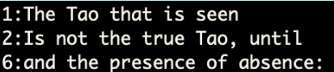

The Unix Shell¶
This course will have two parts.
Part I will discuss basic concepts such as
Introduction to the shell
Navigating the file system (pwd, ls, cd)
Moving files and directories (mv)
Copying files and directories (cp)
Deleting files and directories (rm)
Part II will have more advanced topics such as
Working with files and searches (wc)
Redirecting output (>,>>)
Pipes (|, sort, tail)
Finding Things (grep, find)
A lot of this course is based off of the material from the Software Carpentry website: The Unix Shell. This tutorial is meant for you to walkthorugh by typing the commands in your terminal. We will also be working with a dataset which is the shell-lesson-data. Download the zip file from the link and unzip the file in the Documents directory.
Part I¶
1) Introduction to Unix Shell¶
a) Shell Basics¶
Unix is a powerful operating system (OS) that is used around the world. There are many OS based on Unix such as BSD, Mac OS and Linux among many others. These OSs use a Graphical User Interface (GUI) which can give instructions to the OS through visualization and using menu-driven interactions through a computer mouse.
The GUI allows an intuitive method for using a computer and can help with many tasks. However, when required to perform multiple analytic based the GUI does not work as well as the Unix Shell. The Unix Shell is a Command-Line Interface and scripting language that can be accessed through a terminal. There are different types of CLIs
Bash - Default for most Linux systems and what we will use for this tutorial
Zsh - Default for Mac OS (similar to Bash)
Csh
Bourne Shell
The CLI is powerful as you can customize the interface as well as run various programs either locally or on remote servers through Secure SHell (SSH). The below image is a typical example of a terminal
In our examples we have created an account called sio on a computer named localhost. The $ is the prompt and users can begin entering commands after the prompt. The features of the terminal can be customized through your bash profile. As mentioned previously, we will be using the Bash shell for our examples. To determine which shell you are using you can run the following command.
sio@localhost $ echo $0
For Mac OS users, the default CLI is zsh. If you are using a zsh shell then that is fine and there are no additional changes needed as zsh is very similar to bash. We will also later go into the echo program as well as what the $ is used for (not the prompt).
[ ]:
echo $0
# output
-bash
b) Creating, deleting, copying and moving files and folders¶
Now that we have the ability to view information in the file system we want to be able to manipulate objects. Some of these basic tasks can be done with a few commands
mkdir- Create directoriestouchormv- To move files and directoriescp- To copy files and directoriesrm- To remove files and directories (need additional options to remove a directory)rmdir- To remove a directory
c) Creating directories¶
Currently you should be in the shell-lesson-data/exercise-data directory. Confirm this information with the pwd command. We can create a new folder called thesis
[14]:
mkdir thesis
You can also create sub directories using the -p option
[15]:
mkdir -p ../project/data ../project/result
iv) Creating files¶
There are multiple options when creating a file
Create a new file with the
touchcommand. Thetouchcommand is often use when you need a file for initialization. As an example, in previous versions of python the__init__.pyfile was required to make a module. No information was needed in the file, only that it existed
[ ]:
touch thesis/draft.txt
Use an editor such as nano, vim or emacs to create a file
[ ]:
nano thesis/draft.txt
d) Moving files and directories¶
To move a file or folder to another location or rename the object, we use the mv command. If we wanted to change the name of the draft.txt file we just created to quotes.txt
WARNING: If you rename a file and there is another file with the same name, it will be overwritten
[ ]:
mv thesis/draft.txt thesis/quotes.txt
If we wanted to move the quotes files to our current directory we could specify the file and write out the destination
[ ]:
mv thesis/quotes.txt .
Let’s say that we created a references.tex, introduction.tex and methods.txt file in the wrong directory.
[ ]:
touch references.tex introduction.tex methods.txt
To move these files to the thesis directory we have two options
Manually move the files by listing each file
mv introduction.tex references.tex thesis
Use special that describe patterns to move the files
[ ]:
mv *.tex *.txt thesis
The __*__ Character
The __*__ characters is called the wildcard (also known as a glob). It is used to match 0 or more characters in a file or directory. Use the .tex file as an example, the wilcard is stating that any file that has a .tex at the end will be moved to thesis. Another example is if we only wanted to move files that started with an r and ended with a .tex we could write m*.tex
e) Copying files and directories¶
Similar to moving files, we can also copy files and folders into new locations. This is done with the cp command
[ ]:
cp quotes.txt thesis/quotations.txt
Notice that, in addition to copying the file, we have also renamed the file to quotations.txt. To copy multiple files and folders we need to include the recursive option, -r. The below command will create a backup of the thesis folder and name it thesis_backup
[22]:
cp -r thesis thesis_backup
f) Removing files and directories¶
We can now delete the quotes.txt file since it was in the wrong directory
[ ]:
rm quotes.txt
WARNING: The remove command does not move the file to the trash bin. It ‘unlinks’ the file which will mark that the space as unused on the hard drive so it can be used for other items. This means that the file cannot be recovered. There are special programs that can perform this recovery but it is often very difficult to do.
If we want to remove an empty directory we can use the rmdir command. If we need to remove a directory that contains items we use the rm command with the -r option (recursive).
[ ]:
rm -ir thesis
I have included the -i option above. Often times we may accidentally delete files in a folder that we were not aware of. The -i option prompts for confirmation of deleting each file. Now that we have covered the basics of the Unix shell we can move onto the fun stuff
Part II - The Fun Stuff¶
1) Working with files and searches¶
Navigate to the shell-lesson-data/exercise-data/writing directory. Inside the writing directory is a file called abstract.txt. Using the wc command we can list
The number of lines in the file
The number of words
How many bytes the file uses.
For the wc command the -l option only displays the number of lines and the -c option only displays the size of the file (in bytes).
[ ]:
cd writing
wc abstract.txt
If we wanted to know the number of lines, words and sizes of each file as well as the sum for the lines, words and sizes we could use the wildcard character
[ ]:
wc *.txt
2) Redirecting output¶
In the above example there are only three files listed, if we had thousands of files that we were trying to determine the size we may want to use another method for outputting the data. In the CLI we can use the > characters to move the information from std output (i.e. Unix shell) to a file
[ ]:
wc *.txt > lengths.txt
Notice that nothing is displayed in the CLI. This is because we have decided to write the information to the lengths.txt file.
Redirect Option
>willl create the file if it doesn’t exist or, if the file does exist, it will overwrite the file>>will create the file if it doesn’t exist or append the new information to the file
We can confirm that the data was written to the lengths.txt file by using the cat command
[ ]:
cat lengths.txt
3) Using the Pipe |¶
The reason why the Unix shell is so powerful is that it has the ability to chain together multiple commands. This is done using the pipe |. If we wanted to sort the output of the data we could use the sort command
[ ]:
wc *.txt | sort -n
The -n option sorts the numeric values. Given our example again, if we wanted to know which were the largest files in our directory we could use the tail command to view the bottom three entries
[ ]:
wc *.txt | sort -n | tail -n 3
4) Finding Things¶
Often times it is difficult to remember the location of files or directories on servers or computers. This is especially true when dealing with multiple iterations of a program or script. There are two powerful tools that can be used to find items within directories and text documents.
grepA utility that searches any given input file, selecting lines that match one or more patternsfindA utility that recursively descends the directory tree for each path listed, evaluating the expression in terms of each file in the tree
In the current writing directory there is a file called haiku.txt. If we wanted to search for any words that have the word “not” in the line we could use grep
[ ]:
grep not haiku.txt
We see that grep has successfully returned all the lines that have the word not in it. Let’s try again with using The as a pattern to search for
[ ]:
grep The haiku.txt
First, we see that grep also included words that have the sequence “The” in them. Additionally, we see from the below image by running cat haiku.txt that all lower case versions of the word the were missed.
To fix this we can include additional options to perform a better search
[ ]:
grep -win The haiku.txt

From above image grep is now returning what we had initially intended. This shows that
grepby default is case-sensitive. Using the-ioption allowsgrepto be case-insensitivegrepwill search for any sequence of a pattern. Using-wwill search for the wordWe can also return line numbers with grep by using the
-noption.
If we wanted to search multiple text files in a directory as well as the subdirectories we could use the recursive option, -r with grep
[ ]:
grep -iwnr "Yesterday" .
From the above command we see that, in addition to the options and patter, we also now must include the directory we want to search. It is important to note that grep only works with ASCII (text) files and cannot search binary files.
5) grep and the pipe¶
Just as with any other program, we can also pipe things to grep so that it can search. As an example, when users want to find a command that had previously been executed in the terminal they can use the history command with grep
[ ]:
history | grep -i "cd"
The above command will list the entire history and return only the lines that have “cd” in the string.
6) find: a tool for searching for directories and files¶
grep is used to search for information within a file. The find searches the file system to match patterns associated with a file and a directory.
[ ]:
find .
The above command will recursively search for all files and directories in the current working directory and display them to the std output.
To search only for directories use the -type d option
find . -type d
To search for files use -type f instead
find . -type f
To find text files you can use patterns associated with file names
find . -type f -name "*.txt"
Notice that find doesn’t match our typical syntax for Unix shell commands. Find can also be used to display the path to a file or directory and used with other commands. As an example, if we wanted to find all text files that match the pattern NE*.txt and determine how many lines the files have
[ ]:
wc -l $(find . -type f -name "NE*.txt")
In the above command the items contained within the parenthesis are executed first, then the $ symbol treats the return value from find as a variable. This extends the capabilities of wc as we were only able to use the program with files in the curren working directory. We could also perform the same step by using the -exec option with find
[ ]:
find . -type f -name "NE*.txt" -exec wc -l {} \;
We have now given a basic overview of the Unix shell and a few of the powerful features. In further lessons we will go into scripting and working with the shell using remote sessions.